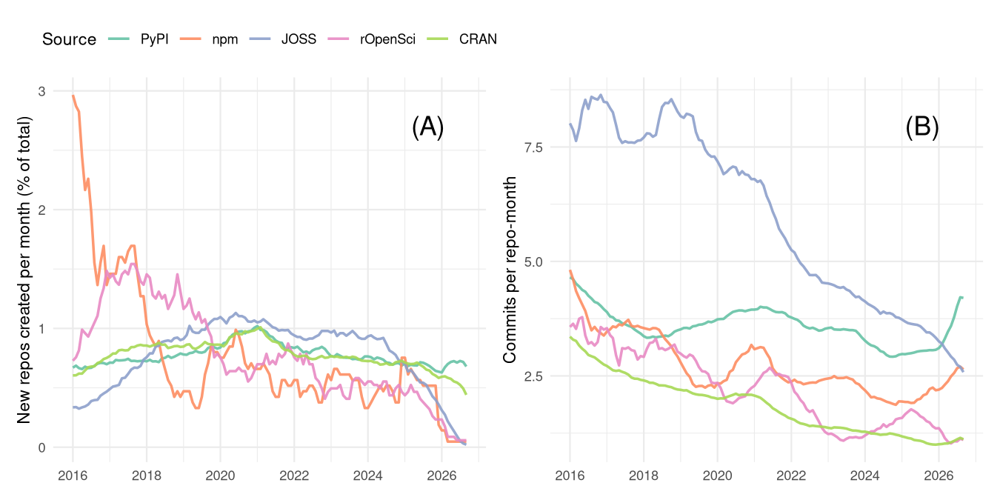
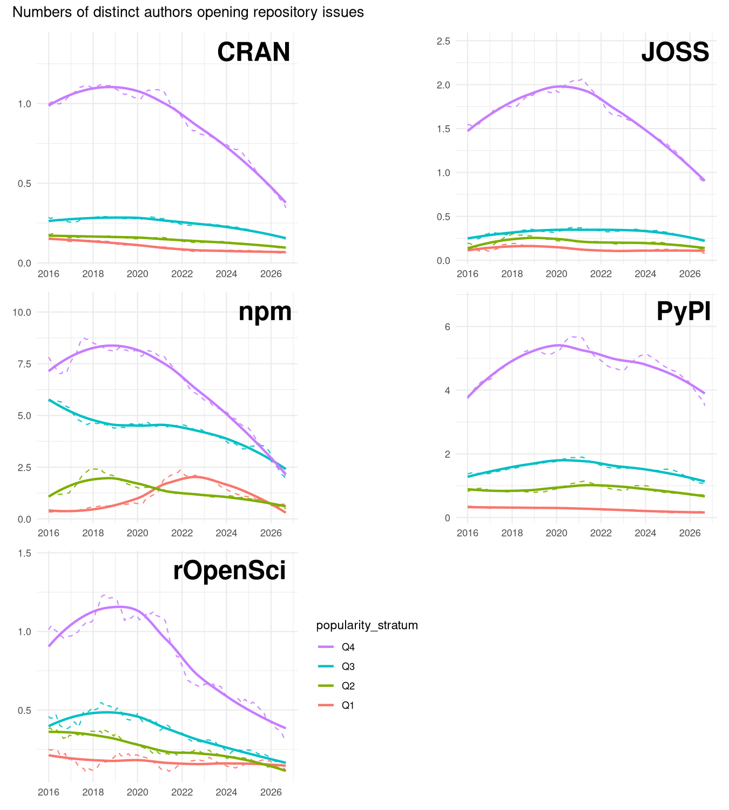
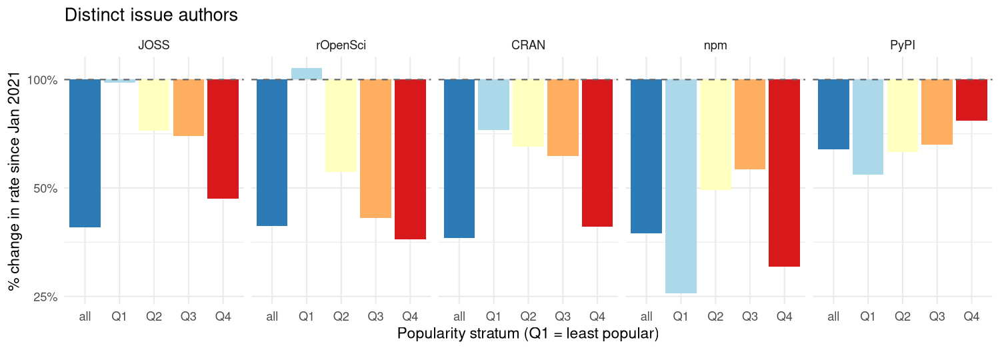
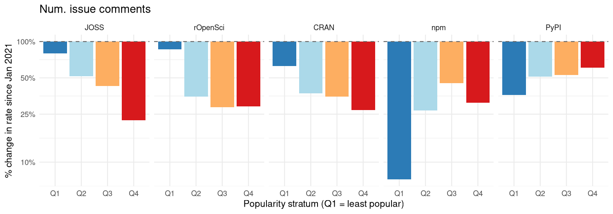
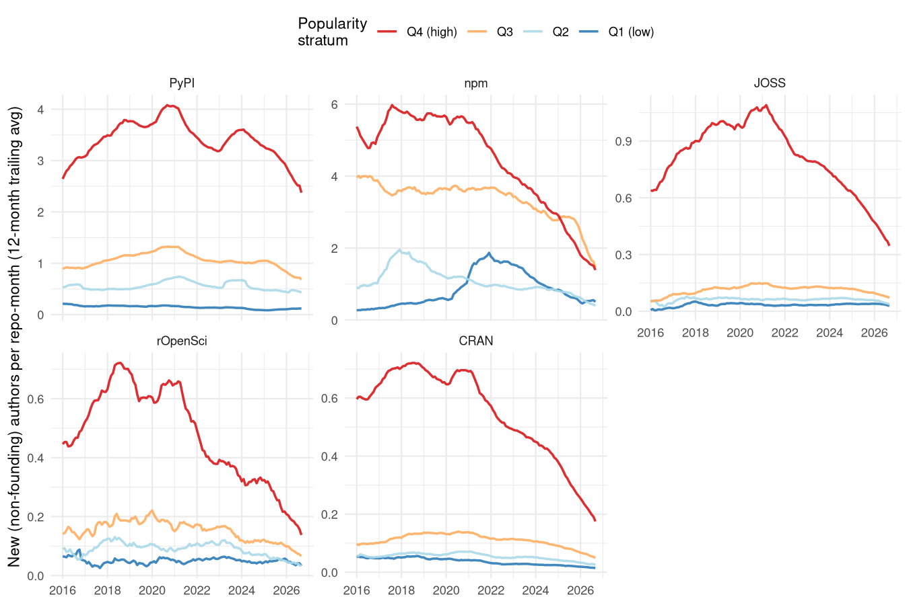
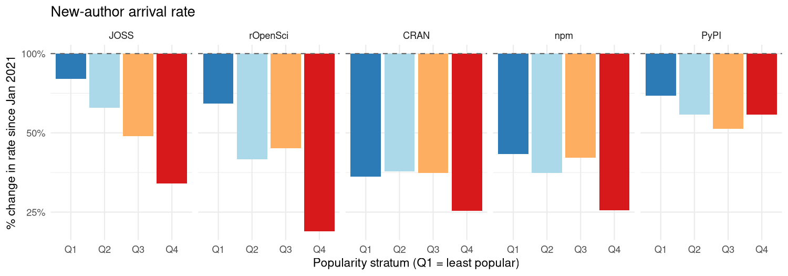
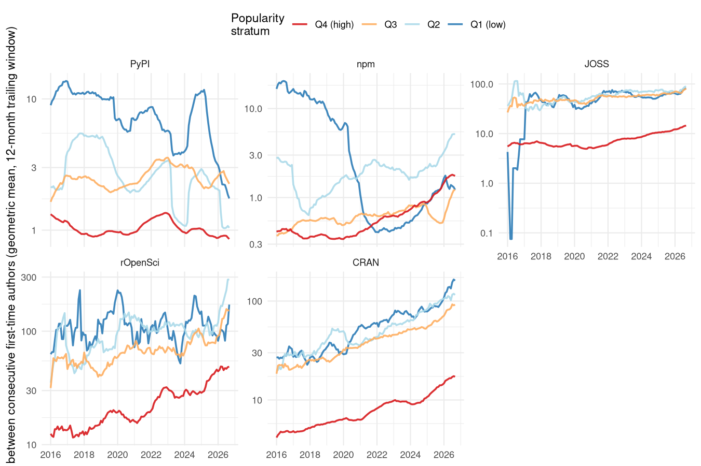
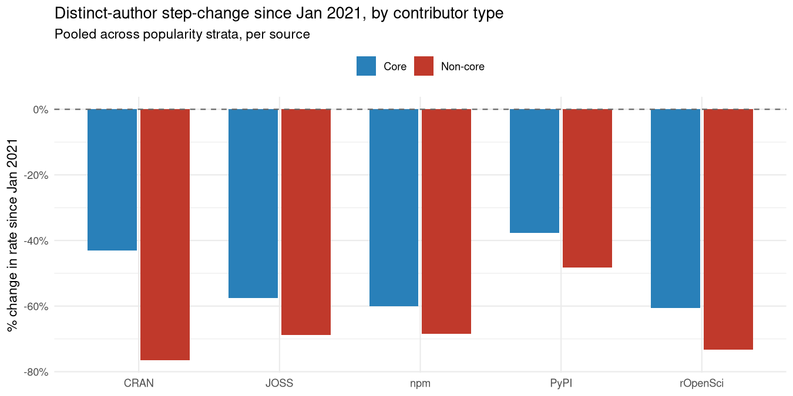
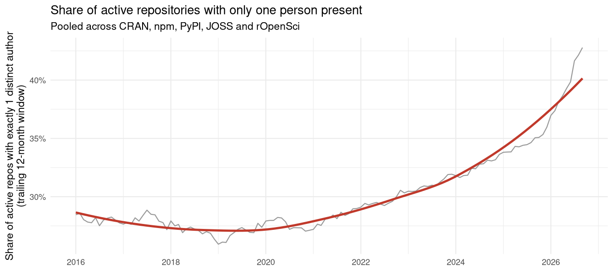
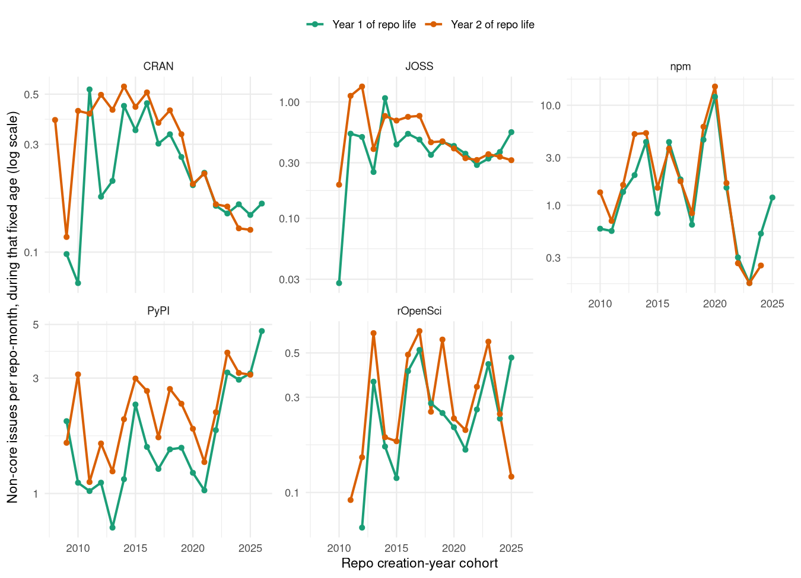

vignettes/coding-alone.Rmd
coding-alone.RmdIn 1995, Robert Putnam noticed that more Americans were bowling than ever before, but the growth was in solo or casual bowling at the expense of organised, collective blowing. He argued that this was reflective of a broader collapse of associational habits which used to knit Americans into overlapping social groups. Local clubs, unions, congregations, leagues had been quietly hollowing out for a generation, not because people had lost interest in the underlying activity, but because they’d stopped doing it together (Putnam 1995, 2000). The incidental organizational structure of bowling leagues turned out to have been key to the way a potentially solitary pastime contributed to social cohesion.
Open-source software has its own version of a league: public repositories, with one or two maintainers at their centre and shifting casts of outsiders who file bugs, ask questions, or leave comments. These communities of contributors guide and nurture ongoing software development. People still write code, but this document shows that the collective structures that have supported and sustained that writing are changing dramtically. Public software repositories are changing from places of social coherence and cohesion to become more like mere mirrors of a single person’s work.
All data are taken from GitHub, primarily as measures of interaction with software repositories through “issues”. Issues are the place for anybody to ask questions of software authors, to report bugs, or to request new features. A corpus of repositories was taken from five sources: three package-distribution systems of npm for Javascript, PyPI for Python, CRAN for R, and two GitHub-based software review organizations, JOSS (the Journal of Open-Source Software), and rOpenSci.
Analyses included every repository reviewed by JOSS and rOpenSci, and samples from the other three. Samples were stratified by popularity (measured as downloads) to ensure even sampling and representation regardless of popularity. In total, 3,139,779 issues were analysed across 52,461 repositories.
More popular or prominent repositories attract greater interaction, resulting in issues being opened more frequently, and from a wider community. To account for the effects of repository popularity, most of the results are represented for four popularity strata, taken as quartiles on a logarithmic popularity scale. The lowest quartile, denoted “Q1”, represents the least popular repositories. Because these generally strongly outnumber popular repositories, these Q1 values may be generally interpreted to reflect the majority of all repositories. The “Q4” repositories are the outlying superstar repositories downloaded millions of times, and with hundreds of people opening issues.
The only other important distinct in the data analysed here is between “core” and “non-core” contributors. Core contributors were identified as the cohort accounting for 99% of the cumulative share of all commits to a repository. The none-core contributors which are the focus of this analyses were taken as the cohort who collectively contributing less than 1%. This 1% threshold was arbitrarily set, but changing to alternative values like 2 or even 5% has no qualitative impact of any of the results or conclusions drawn.
A few additional statistics were also extracted, and are described alongside the main analysis.
The most direct measures of coding activity are the creation of new repositories, and numbers of commits in each. Time series of these two statistics are shown in the following two panels. Both of these show trends common to most results that follow, with variable development up until 2020-2021, followed by more progressive trends. For that reason, many of the results shown below only show time series from the January 2021 onwards. Comparisons are also made as “step changes” between January 2021 and the present (Sep 2026)

Fig. 1: Rates of creation of new repos (top panel, as relative monthly percentages) and of commits per month (bottom). All rates are 12-month trailing averages.
The decrease in repository creation could of course simply reflect people moving away from GitHub and towards alternative code hosting sites. Such effects are not considered further here, but all analyses that follow are derived from existing GitHub repositories, and are independent of whether or not people are abandoning GitHub for alternative sites. The rates of monthly commits of Fig. 1 are an example. All of these rates generally decline, although also at lower rates than equivalent declines in rates of repository creation. These declines in commit rates are genuine declines observed among those people still active on GitHub.
There are several ways to measures numbers of contributors to open-source software. Source code itself provides one of the most direct measures, generally through tracking who made each change. Code-hosting platforms provide a different approach, through data on repository issues. Anybody (with an account) can open an issue to ask a simple question. Many who do may not necessarily end up directly contributing to code at all, and so data on issues offers more inclusive insights into larger communities beyond direct code contributors.
The following graphs show numbers of unique people opening new issues on repositories for the five software ecosystems. All counts are standardised to numbers of new issues per repository. All of these patterns reveal consistent changes either side of around 2020. And all of them have progressively decreased since that time.

Fig 2: Numbers of distinct authors opening new issues
For each software source, lines are shown for the four distributional quartiles described above. “Q4” represents the relatively few extremely popular packages, while “Q1” is the quartile of lowest popularity. (And these quartiles are defined on a logarithmic scale, so there are far more packages in Q1 than in Q4.)
The next figure (Fig 3) shows average declines since Jan 2021 for each software ecosystem and for each popularity quartile. Many of these declines are more pronounced for the most popular software (Q4), although PyPI shows the opposite trend, with decreases in numbers of unique issue authors being less severe for the most popular packages, while npm shows an intermediate pattern.

Fig 3: Changes in numbers of unique issue authors since 2021. Values are shown for four popularity quartiles, from lowest (Q1) to highest (Q4).
Total numbers of comments on each issue show a similar pattern (Fig. 4), with similarly reversed trends for PyPi as well as npm.

Fig 4: Changes in numbers of comments since 2021, as for previous figure.
Relative differences in all statistics to this point are quantified in the following table of percentage change in both rates from Jan 2021. (Repository creation for both JOSS and rOpenSci generally only occurs following rigorous review processes, and so values for these two can’t really be directly compared with the other sources, and are likely affected by additional constraints and influences.)
| Source | Repo creation (%) | Commits (%) | Distinct Authors (%) | Issue Comments (%) |
|---|---|---|---|---|
| JOSS | -73% | -56% | -61% | -83% |
| rOpenSci | -78% | -54% | -61% | -71% |
| CRAN | -38% | -49% | -64% | -78% |
| npm | -55% | -22% | -63% | -70% |
| PyPI | -29% | -18% | -36% | -50% |
The rates at which new authors of GitHub issues appear have also progressively decreased across all software systems (Fig. 5). In 17 of those 20 combinations of software source-by-popularity stratum, the new-arrival rate has fallen by more than overall author density has, meaning the decline documented above isn’t simply existing regulars posting a little less often; it’s disproportionately a shrinking supply of people showing up for the first time at all.

Fig 5: Rates of arrival of new issue authors per repo-month
The following plot converts those absolute measures to relative scales, to enable comparison of relative rates of change across the popularity quartiles for each software source. In almost all cases, decreases in arrival rates of new authors are most severe for the most popular packages.

Fig 6: Changes in rates of new-author arrival since 2021, as for previous figures.
An alternative way of examining these decreases in rates of arrival are in terms of intervals between the arrival of each sequential pair of new authors (Fig. 7).

Fig. 7: Intervals in days between successive arrival of new authors.
For each person contributing to a repository, GitHub also provides a measure of their relative overall contribution, measured as numbers of commits to source code. These relative contribution values were used to arbitrarily distinguish core contributors to a repository as those contributing a cumulative total of 99% of all commits. Non-core contributors were then identified as those contributing less than 1% of the cumulative total. While this threshold is arbitrary, none of the results or conclusions that follow are qualitatively affected by different values.
First, relative decreases in numbers of distinct authors have decreased more for non-core than for core authors for all software sources (Fig. 8).

Fig. 8: Relative decreases since Jan 2021 in numbers of core and non-core contributors to repositories
| Source | Total (%) | Core (%) | Non-Core (%) |
|---|---|---|---|
| CRAN | -74% | -43% | -76% |
| JOSS | -69% | -58% | -69% |
| npm | -63% | -60% | -68% |
| PyPI | -38% | -38% | -48% |
| rOpenSci | -71% | -61% | -73% |
Core headcounts have fallen in every one of the five sources - 5 out of 5 - and so has total headcount, core and non-core combined - 5 out of 5. Nobody’s circle is exempt. What does differ is degree: in every one of the five sources, the core headcount has fallen by less than the non-core headcount did over the same period (5 out of 5) - consistent with attrition working its way inward from a project’s edges rather than hitting the whole population evenly at once, but not with the core being insulated from it altogether. A repository’s inner circle is shrinking more slowly than its outer one, not staying put while the outer one empties around it.
Findings 1 and 2 are both rate-based: fewer distinct people per repo-month, averaged across a whole population of repositories. The plainer, Putnam-shaped question is a repo-count one: out of the repositories that heard from anyone at all in the last year, how many heard from only one person?

Share ot active repositories with only one person active
Overall in January 2021, 27% of repositories with any issue-based activity at all in the preceding year had that activity coming from a single person. By September 2026, that share had risen to 43% - not a fixed population getting quieter across the board, but a growing fraction of it crossing all the way over into having no visible second person at all.
The same alternative explanation the companion vignette rules out for issue counts applies here too: repositories might generate less non-core interest simply because they’re older - documentation accumulates, FAQs get answered once and closed, rough edges get sanded down - independent of any shared moment in calendar time. Disentangling the two needs the same age/period/cohort trick: fix a repository’s age and let cohort (the calendar year that age fell in) vary, so pure maturation predicts flat lines at a given age regardless of which year that age happened to fall in, while a shared calendar-time effect predicts later cohorts showing a lower rate at that same fixed age than earlier ones did.

plot of chunk cohort-age-plot
CRAN, JOSS and npm show the calendar-time signature clearly: at a fixed early age, the non-core rate falls steadily as the cohort year increases, roughly halving or more between repositories born in the mid-2010s and those born in the early 2020s - not what pure maturation predicts. PyPI and rOpenSci don’t show a comparable cohort-driven decline at fixed age, which is worth flagging rather than smoothing over: whatever combination of forces is driving the broader pattern doesn’t touch every source through quite the same channel, even though the outcome - fewer people showing up now than five years ago - turns out to be shared by all five.
Nothing in this dataset says why. But the pattern - a shrinking, and increasingly solitary, pool of participants, hitting visible and obscure projects alike, reaching core contributors as well as outsiders, unexplained by projects simply aging - lines up with what’s independently being reported about the people who keep open source running day to day, in terms that echo Putnam’s own more directly than might be expected. A 2024 survey of open-source maintainers found that 61% of them maintain their project entirely alone, and that unpaid maintainers were disproportionately likely to be the ones flying solo (Socket 2024). Tidelift’s own 2024 survey of maintainers found that 60% remain entirely unpaid and nearly 60% have quit, or seriously considered quitting, a project they maintain, citing competing life demands, loss of interest, and burnout among the leading reasons (Tidelift 2024). In November 2025, Kubernetes’ steering and security committees retired Ingress NGINX - one of the most widely deployed pieces of cloud-native infrastructure in existence, maintained for years by one or two people working nights and weekends - after concluding that no amount of public appeal could attract the additional help needed to keep it going (Kubernetes SIG Network and Security Response Committee 2025). A project that visible sitting in this dataset’s own Q4 is exactly the kind of case Finding 5 describes: popularity that didn’t translate into a growing base of people ready to share the load.
The newcomer side of the pipeline shows a matching strain from the supply end. Newcomers have always been hard to retain - a decade-old study of one large Apache project found fewer than one in five who showed up ever became long-term contributors, largely depending on whether their first interaction got a timely, helpful response (Steinmacher et al. 2013). More recent evidence suggests the on-ramp meant to fix exactly that problem is itself fraying: a 2026 longitudinal study of “good first issue” labelling across 37 popular OSS projects found that after holding steady for three years, the share of issues labelled as newcomer-friendly began a statistically significant decline starting in January 2024 (Hoshikawa et al. 2026) - maintainers with less time or attention to spare evidently have less of it left over for curating an on-ramp, on top of everything else. None of this is a new problem invented by any one technology; a decade before any of it, Nadia Eghbal’s Roads and Bridges was already describing critical open-source infrastructure sustained by a handful of unpaid volunteers, and arguing that the fix isn’t simply money, because what these projects actually run short of is people (Eghbal 2016).
The decline’s timing loosely coincides with two other, independently documented shifts: GitHub Copilot’s move from limited preview to general availability in mid-2022 (Wikipedia contributors 2026), and a well-documented collapse in Stack Overflow’s own new-question volume beginning around the same time (Orosz 2025; Holscher 2025) - the other major venue for the same kind of peer-to-peer technical exchange this dataset measures. One speculative mechanism worth naming, though this dataset can’t test it directly: if AI coding assistants increasingly converge developers onto similar solutions and similar code, that kind of algorithmic monoculture could itself thin out the organic variety of problems that used to generate an issue or a question in the first place (Bommasani et al. 2022). That’s one candidate explanation among several plausible ones, offered as context rather than as something this dataset can adjudicate - and it would sit alongside, not replace, Putnam’s own preferred explanations for the associational decline he documented: generational turnover, two-career households leaving less unscheduled time, and, well before social media, the privatising pull of television (Putnam 2000).
Putnam’s title image worked because bowling itself wasn’t disappearing - what was disappearing was the league around it, the thing that turned an individual pastime into a piece of shared civic life. This dataset can’t speak to whether people are writing less code; if anything, the tools available for writing it alone have only multiplied. What it can speak to is the collective structure built around that writing, and on every cut available - non-core outsiders, core contributors, everyone combined, and the blunter question of how many repositories now involve only one person at all - that structure has been thinning since around 2021, across five different ecosystems, unexplained by projects simply maturing, and unprotected by popularity. The one place this dataset finds a countervailing force - rOpenSci’s formal peer review, sustaining non-core engagement in its own least-visible packages - doesn’t rescue that same corner of rOpenSci from a rising solo-repository share either. None of that is proof of any single cause. What it is, is a structural, five-ecosystem-wide shift from code written and shared among a loose, overlapping circle of people toward code written and shared by one person at a time - open source’s own version of bowling alone, showing up in this dataset at almost exactly the same moment outside observers, from maintainer surveys to a retired Kubernetes component, have been reporting it from the other side.